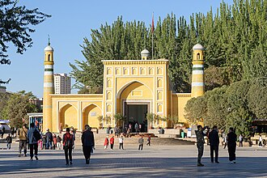

PrésentationتقديمOverview
La mosquée Id Kah est la plus grande mosquée de Chine. Elle est située sur la place centrale de Kashi (Kashgar), et s'étend sur 16 800 m2 ce qui permet à 10 000 personnes d'y effectuer la prière du vendredi. Elle fut construite en 1442 par Saqsiz Mirza, émir de Yarkand afin de prier pour ses parents et amis disparus.
مسجد عيد غا، أو عيد غاه، أو عيد كاه، يقع في كاشغر، شينجيانغ، غربي الصين.
The Id Kah Mosque is a mosque in Kashgar, Xinjiang, China. With the capacity of 20,000 worshipers inside the mosque and its sahn, it is the largest mosque in China.
Iydgâh Camii, Sincan Uygur Özerk Bölgesi'nde Kaşgar şehrinde tarihi bir camidir.
Masjid Id Kah adalah sebuah masjid yang terletak di Kashgar, Xinjiang, di Tiongkok barat.
عید گاہ مسجد(اویغور: Héytgah Meschit, چینی: 艾提尕尔; پینین: àitígǎěr) چین کے مسلم اکثریتی صوبہ سنکیانگ کے شہر کاشغر میں واقع ایک مسجد ہے۔ یہ چین کی سب سے بڑی مسجد ہے جہاں ہر جمعہ کو 10 ہزار افراد جمع ہوتے ہیں جبکہ اس میں 20 ہزار نمازیوں کی گنجائش ہے۔
Die Heytgah-Moschee ist eine Moschee in der Stadt Kaschgar im Uigurischen Autonomen Gebiet Xinjiang der Volksrepublik China. Es ist die größte Moschee Xinjiangs und gilt als eine der einflussreichsten Zentralasiens. Sie wurde im 15. Jahrhundert von Saqsiz Mirza erbaut.
La Moschea Id Kah è una moschea situata a Kashgar, nello Xinjiang, Cina. L'edificio domina la piazza principale della città.
De Aidkahmoskee bevindt zich in Kashgar in de regio Xinjiang. Kashgar is het islamitische hart in China; in de stad is ongeveer 85% van de bevolking Oeigoer, in de gehele prefectuur is dat meer dan 90%.
艾提尕（gǎ）尔清真寺 位于中華人民共和國新疆维吾尔自治区喀什地区喀什市吾斯塘博依街道，是新疆最大的清真寺，也是中亚最有影响力的三大清真寺之一，始建于明代。
ईदगाह मस्जिद पश्चिमी जनवादी गणतंत्र चीन के शिन्जियांग प्रान्त के काश्गर शहर में स्थित एक मस्जिद है। यह चीन की सबसे बड़ी मस्जिद है, जिसमें १०,००० से २०,००० नमाज़ी समा सकते हैं। रमज़ान के दौरान यहाँ कभी-कभी १ लाख लोगों तक का जमावड़ा हो जाता है। इसका निर्माण सन् १४४२ (अनुमानित) में शक़सिज़ मिर्ज़ा ने करवाया, जो उस समय काश्गर के शासक थे। यहाँ पहले से सन् ९९६ से बने हुए कुछ हिस्से थे जिन्हें मस्जिद में शामिल कर लिया गया।
Ид Ках — самая большая мечеть в Китае. Расположена на центральной площади населённого уйгурами-мусульманами города Кашгар. Имеет площадь в 16800 м² и вмещает до 20000 молящихся. Построена в 1442 г., хотя наиболее древние участки можно отнести к IX—X вв. Впоследствии расширялась и перестраивалась. Ворота из жёлтого кирпича с вставками из гизума.
มัสยิดอิดกะฮ์ เป็นมัสยิดที่ตั้งอยู่ในคาสการ์, เขตปกครองตนเองซินเจียงอุยกูร์, ประเทศจีน โดยสามารถจุได้ถึง 10,000 คน และทุกวันศุกร์ จะมีคนมาละหมาดถึง 20,000 คน
Moscheea Id Kah este o moschee din orașul Kaxgar, China. Numele de Id Kah vine de la Eid Gāh din limba persană care înseamnă Locul Sărbătorilor. De asemenea, aceasta este cea mai mare moschee din China.
Sur la carteعلى الخريطةOn the map
Documents et liensوثائق وروابطDocuments and links
- Wikipédia — Français
- Wikipédia — العربية
- Wikipédia — English
- Wikipédia — Türkçe
- Wikipédia — Bahasa Indonesia
- Wikipédia — اردو
- Wikipédia — Deutsch
- Wikipédia — Italiano
- Wikipédia — Nederlands
- Wikipédia — 中文
- Wikipédia — 日本語
- Wikipédia — हिन्दी
- Wikipédia — Русский
- Wikipédia — ไทย
- Wikipédia — Română
- Wikidata — Q1325825
Données : Wikidata (CC0), mises à jour tous les 3 mois. L'année est la plus ancienne date de construction connue du bâtiment : pour un édifice devenu mosquée plus tard (comme Sainte-Sophie), c'est celle du bâtiment d'origine. Photos : Wikimedia Commons, auteur et licence sur la page de chaque photo.البيانات: ويكي بيانات (CC0)، تُحدَّث كل 3 أشهر. السنة هي أقدم تاريخ معروف لبناء المبنى: فإن صار مسجدًا لاحقًا (مثل آيا صوفيا) فهي سنة المبنى الأصلي. الصور: ويكيميديا كومنز، المؤلف والرخصة في صفحة كل صورة.Data: Wikidata (CC0), updated every 3 months. The year is the earliest known construction date of the building: for a building that became a mosque later (such as Hagia Sophia), it is that of the original building. Photos: Wikimedia Commons, author and licence on each photo's page.
Grandes mosquées du mondeالجوامع الكبرى في العالمGreat mosques of the world →